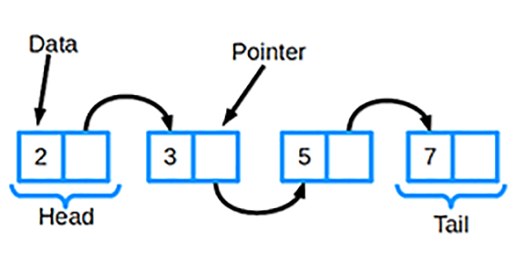

Связный список

Связный список является одной из самых основных структур данных. Его часто сравнивают с массивом,
поскольку многие другие структуры данных могут быть реализованы либо с помощью массива, либо с помощью связного списка.
У каждого из них есть свои преимущества и недостатки.
Связный список состоит из группы узлов, которые вместе представляют последовательность. Каждый узел содержит две вещи:
- Фактические данные, которые хранятся (которые могут быть представлены любым типом данных)
- Указатель (или ссылка) на следующий узел в последовательности.
Существуют также дважды связанные списки, в которых каждый узел имеет указатель и на следующий, и на предыдущий элемент в списке.
Самые основные операции в связанном списке включают добавление элемента в список, удаление элемента из списка и поиск в списке для элемента.